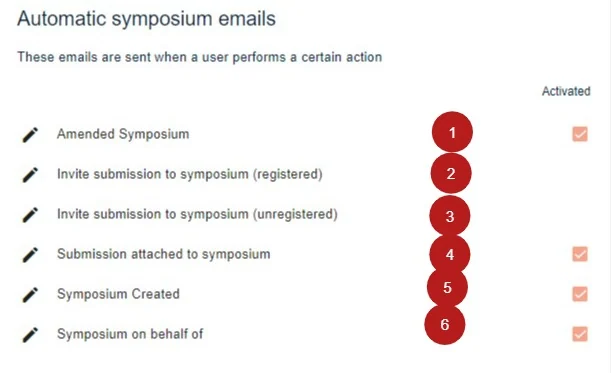
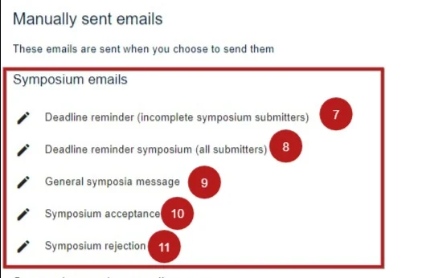
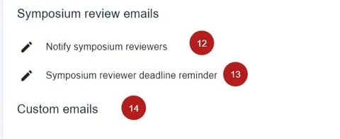

Symposia decisions & emails
The last stage: recording outcomes for your symposia and telling people about them. Both work like their abstract equivalents, with templates written for symposia.
This guide is for event administrators.
Recording decisions#
Go to Event dashboard → Symposium → Decisions**.
Decisions are made in the symposium decisions table exactly as they are in the submissions decisions table, so follow Recording a decision.
To withdraw a symposium rather than reject it, see Managing symposia.
Symposia emails#
Go to Event dashboard → Emails → Edit & Send → Symposium**.
The email tool works as it does elsewhere, so it is worth being familiar with creating and sending emails first.
Automatic emails#
These send themselves when something happens. There are six, triggered when:
- A symposium submitter logs in and amends an existing symposium.
- A submitter invites a registered user to submit an abstract to their symposium.
- A submitter invites an unregistered user to do the same.
- A submission is attached to their symposium.
- They create a symposium.
- A symposium is submitted on their behalf.

Manually sent emails#
These you send yourself, when you are ready.
To symposium submitters:
- those whose submissions are incomplete
- all submitters, regardless of status
- a free template for any other announcement
- those whose symposia have been accepted
- those whose symposia have been rejected

To reviewers:
- notify them that reviewing is open
- remind them of the reviewing deadline
- a free template for a custom email

For how to send them in batches, see Symposia reviewing.
Did this page solve it?
Thanks — this helps us fix it.
Didn't solve it? Ask our support team
No question is too small, and there's no charge for asking. Raise a ticket and someone who knows the software will pick it up.